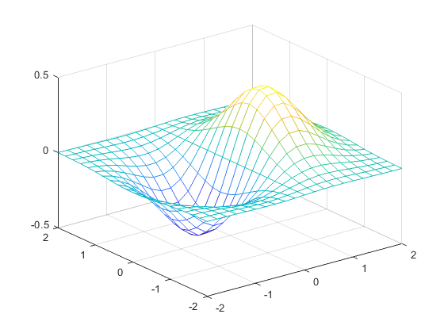
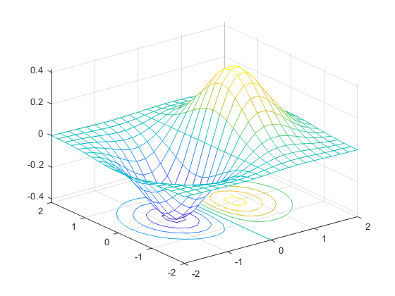
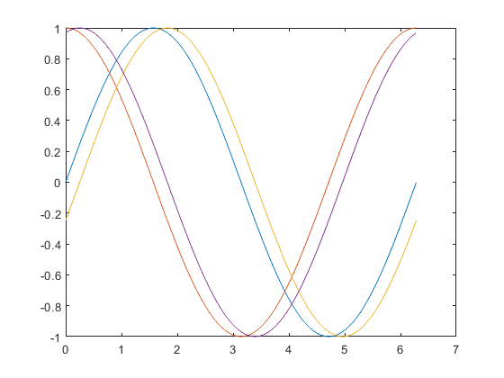
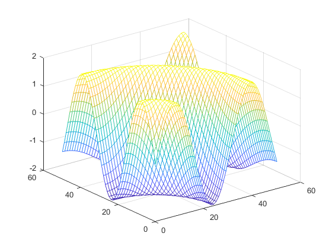
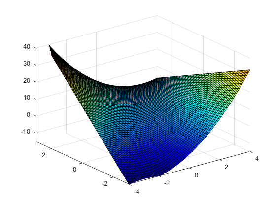
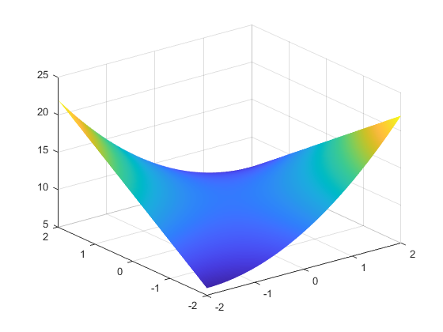
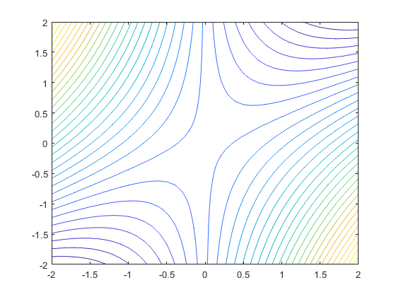
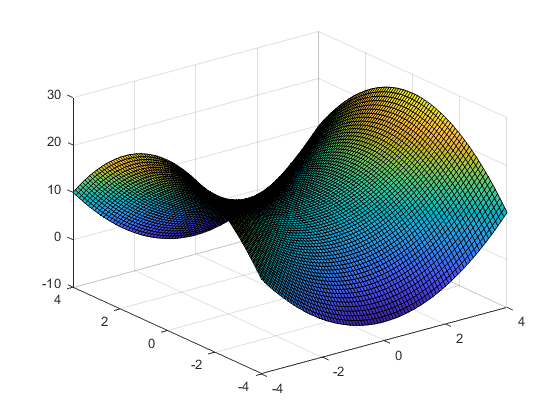
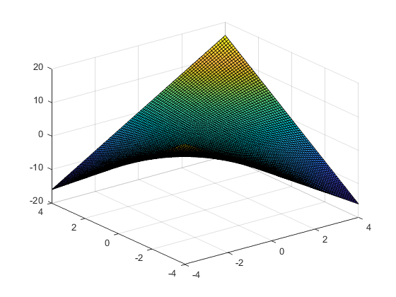
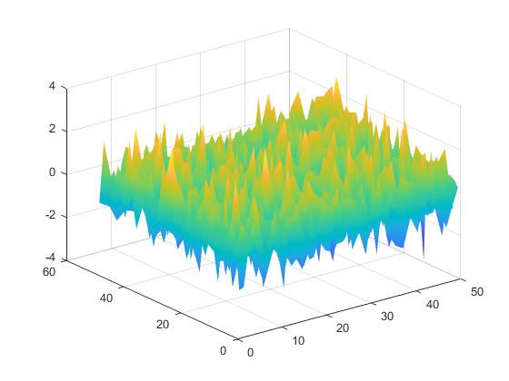

Contents
q1 mesh and meshc
[X,Y] = meshgrid(-2:.2:2, -2:.2:2); Z = X.*exp(-X.^2-Y.^2); figure mesh(X,Y,Z) print('meshtwo.jpg', '-djpeg') figure meshc(X,Y,Z) print('meshctwo.jpg', '-djpeg') 
q2 multigraph
t = 0:pi/50:2*pi; y1 = sin(t); y2 = cos(t); y3=sin(t-0.25); y4=cos(t-0.25); figure plot(t,y1,t,y2,t,y3,t,y4) print multigraph.jpg -djpeg
q3 meshgrid
meshgrid takes only one arguemtns for maeshing with grid size gxg
g=0:0.2:10; [X,Y]=meshgrid(g); Z=2*sin(sqrt(X.^2+Y.^2)); figure mesh(Z) print meshthree.jpg -djpeg
q4 rotate 3D
rotate3d allows to change the view point
x=-4.0:0.1:4.0;
y=-3.0:0.1:3.0;
[X,Y] = meshgrid(x,y);
Z = X.^2 - 2*(X.*Y) + 3*Y + 2;
figure
rotate3d on;
surf(X,Y,Z)
axis([-4 4 -3 3 -15 40])
colormap(jet)
 q5 surftwo and countertwo
colormap(jet) x = -2:.1:2; y=x; [X,Y] = meshgrid(x,y); Z = X.^2-2*(X.*Y); figure rotate3d on; surf(X,Y,Z+10) shading interp; print surftwo.jpg -djpeg hold on; figure axis([-2 2 -2 2 0 25]); xlabel('X'); ylabel('Y'); contour3(X,Y,Z+10,30,'k') contour(X,Y,Z+10,30) print contourtwo.jpg -djpeg 
q6 saddles
x = -4:0.1:4; y = x; [x y] = meshgrid(x, y); z1 = x.^2-y.^2; z2 = x.*y; figure surf(x,y,z1+10); print saddles1.jpg -djpeg figure surf(x,y,z2); print saddles2.jpg -djpeg 
q7 an intersting graph
A = randn(50); figure surf(A) shading interp print strange.jpg -djpeg